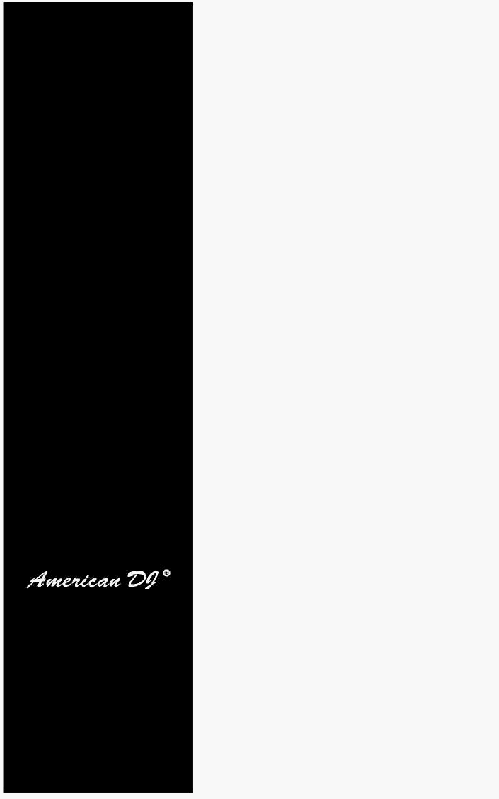

Зміст
Особливості 1
Загальні вказівки 2
1. Короткий огляд 3
1.1 Передня панель 3
1.2 Задня панель 6
2. Опис інструкцій 7
2.1 Початок Програмування 7
2.1.1 Дозвіл Запису 7
2.1.2 Безпека Ваших Програм 7
2.1.3 Програмування Сцен 8
2.2 Редагування 11
2.2.1 Редагування Програми 11
2.2.2 Стирання Програми 12
2.2.3 Стирання всіх Програм 13
2.2.4 Очищення Сцени або Сцен 13
2.2.5 Видалення Кроку або Кроків 14
2.2.6 Вставка Кроку або Кроків 15
2.2.7 Модифікація Кроку або Кроків 17
2.3 Виконання 18
2.3.1 Виконання послідовності Програм 18
2.3.2 Запуск Програми від Аудіо входу 19
2.3.3 Запуск Програми з повзунка швидкості 20
2.3.4 Виконання Програми стандартним тактом 21
2.4 Зміна режиму швидкості між
5 Хвилин і 10 Хвилин 22
3. Робота з інтерфейсом MIDI 23
3.1 Установка вхідного каналу MIDI IN 23
3.2 Установка вихідного каналу MIDI OUT 23
3.3 Вихід з режиму установок MIDI 24
3.4 Прийом даних Файлу MIDI 24
3.5 Передача даних Файлу MIDI 25
3.6 Специфіка виконання 25
Резюме головних функцій 27
Технічні характеристики 30
48 канальний
пульт керування
дімерами
Удосконалення й зміни в
специфікації й у цьому
керівництві можуть бути
виконані в будь-який час
без попереднього
повідомлення.
Усі права захищені.